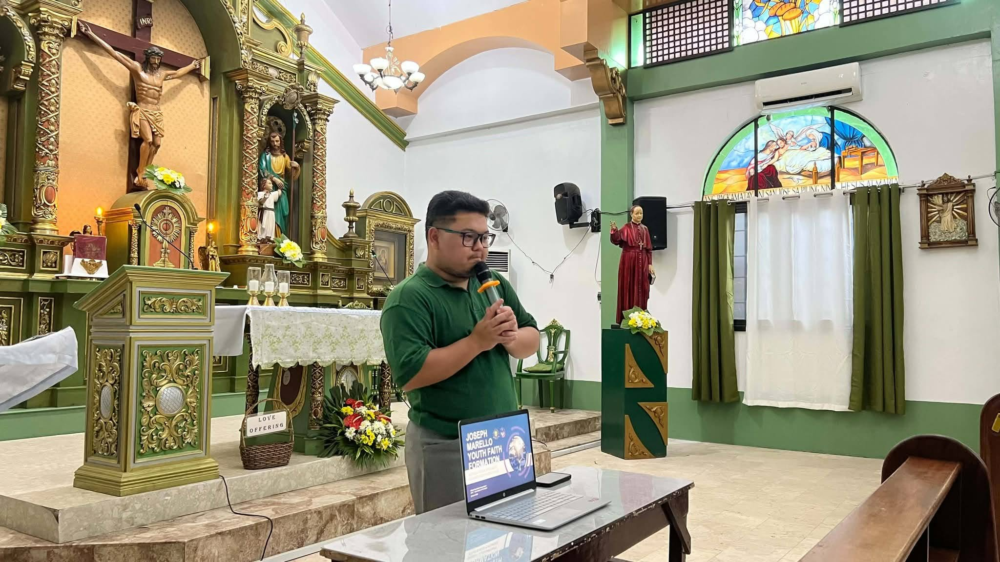
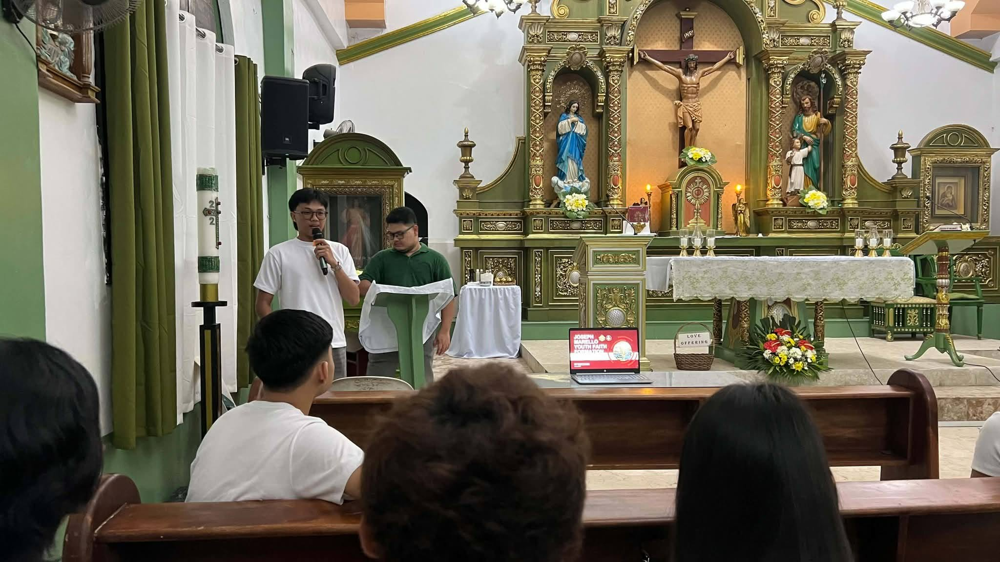
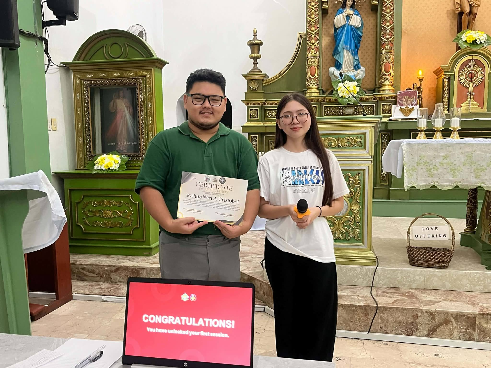
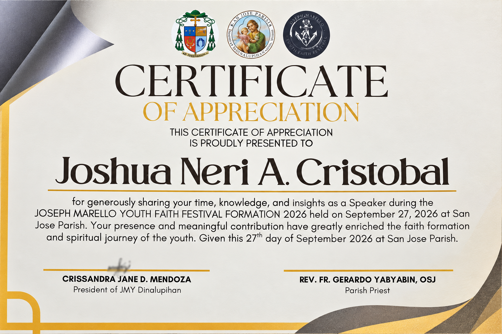

Reflections · Leadership & Development · Case · 2026
Returning to JMY as a Formation Speaker
On September 27, 2026, I returned to Joseph Marello Youth as a speaker during the JMY Faith Festival Formation at San Jose Parish, continuing a relationship that had moved from youth leadership, to recognition after service, and now to formation.
Engagement record
The experience at a glance.
- Organization
- Joseph Marello Youth
- Engagement
- JMY Faith Festival Formation 2026
- Role
- Speaker
- Date
- September 27, 2026
- Venue
- San Jose Parish
- Recognition
- Certificate of Appreciation for sharing time, knowledge, and insights as a speaker
- Focus
- Youth faith formation and spiritual development
A continuing relationship
Returning mattered because the relationship with the organization had changed again.
Joseph Marello Youth had already been part of my development as a young leader. Years later, returning as a speaker placed me in a different role: no longer carrying the organization from inside its leadership structure, but contributing to the formation of the young people now moving through it.
The 2026 Faith Festival Formation became another point in that longer arc. The invitation was not simply to attend, but to share time, knowledge, and insights in a setting intended to support the faith formation and spiritual journey of the youth.
Documentary record
Speaking, formation, and recognition.
Photographs and the certificate from the September 27, 2026 JMY Faith Festival Formation.




Recognition after contribution
The certificate records a contribution, but the more meaningful continuity is the invitation to return.
The certificate recognized the contribution made as a speaker, specifically the sharing of time, knowledge, and insights during the formation activity. It also described that contribution as enriching the faith formation and spiritual journey of the youth.
In the context of my longer relationship with JMY, the recognition sits within a pattern rather than as a standalone achievement: participation, leadership, return, and then another invitation to contribute in a new capacity.
The JMY arc
Leadership can continue after the formal role ends.
This engagement follows earlier periods of leadership within Joseph Marello Youth and a later return in 2025, when former leaders and contributors were recognized during the JMY Faith Festival.
Leadership & Development
Return to the leadership record.
Explore the experiences where responsibility, trust, formation, and continued contribution shape leadership in practice.
Leadership & Development →